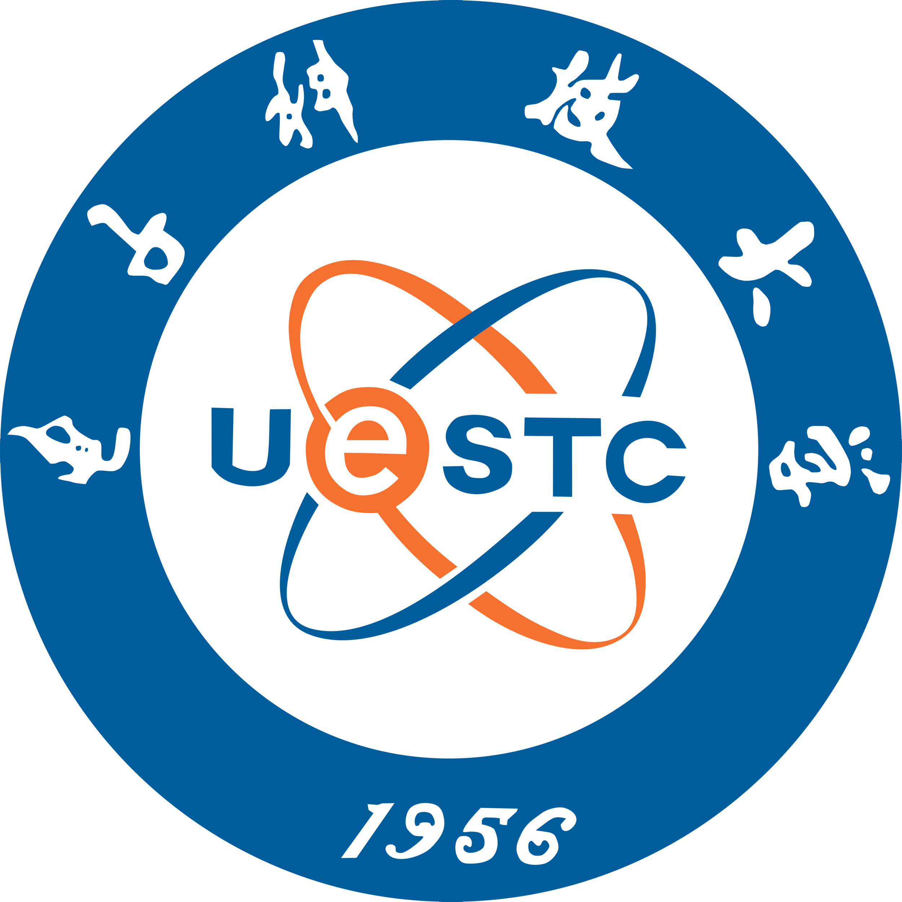

Dr. Happy N. Monday

Dr. Happy N. Monday
About Me
About Me
Dr. Happy Nkanta Monday is a Senior AI Researcher, Lead Machine Learning Engineer and Associate Professor of Computer Science.
With years of experience spanning academia, applied research, and industry collaborations, he bridges the gap between theoretical advances and practical AI solutions.
In academia, Dr. Monday serves at Chengdu University of Technology, where he has progressed from Assistant to Associate Professor. He has taught and designed curricula in machine vision, machine learning, networking, and digital systems for diverse international cohorts, while co-leading the Computing Research Team. His research, exceeding 70 publications and over 1000 citations (h-index 17), has been recognized with awards including the Best Paper Award at PRAI (2021) and Best Oral Presentation at ICAIT (2024). His academic impact is complemented by committee roles for PRAI, ICACS, and IEEE conferences, alongside peer-review service for leading journals including IEEE Transactions on Industrial Informatics. In industry and applied research, Dr. Monday has established a strong record of translating complex problems into explainable, deployable AI solutions.
He has co-led international collaborations with the CDUT-AI Center, Big Data Research Institute, and the Joint Research Centre of Agricultural Big Data, delivering machine learning systems across clinical, agricultural, and industrial domains. His portfolio includes interpretable medical imaging pipelines for ECG and diabetic retinopathy, super-resolution models for CT and CXR diagnostics, solar irradiance forecasting systems, and crop classification tools. Under his mentorship in the collaboration, the team has published their first high-impact journal in Computers & Electronics in Agriculture (IF 8.9). Beyond research, he has built usable prototypes with Streamlit, HuggingFace, and TensorFlow, accelerating adoption in both research and educational settings.
Dr. Monday’s career reflects a dual commitment: advancing the science of machine learning, deep learning, and explainable AI, while delivering scalable solutions that improve decision-making in medicine, energy, agriculture, and industrial optimization. Whether teaching, mentoring, or building AI pipelines, he is dedicated to shaping the next generation of researchers and creating responsible, high-impact technologies that move from the lab to real-world practice.
Research Interest
.
Medical Image Processing and Analysis
.
Large Language Model (LLM)
.
Retrieval-Augmented Generation (RAG)
.
Agentic AI
.
Medical Image Disease Diagnosis
.
Biomedical informatics
.
Artificial Intelligence
.
Industrial Informatics
.
Machine Learning
.
Agricultural Informatics
.
Environmental Sustainability
.
Energy Informatics
.
Deep Learning
.
Pattern Recognition
.
Business Intelligence and Informatics
News
[Recognition Award]
Dr. Happy Monday is honored to receive the
Outstanding Instructor Award,
becoming the first foreign lecturer
in Chengdu University of Technology history
to earn this recognition. This award was presented in acknowledgment of his role as
Co-Lead Instructor for the
first CSC-sponsored Summer School Program
in CDUT history.
This recognition underscores his dedication to academic excellence, international collaboration,
and advancing innovative teaching in Artificial Intelligence.
Outstanding Instructor Award
July 28, 2025
Chengdu University of Technology
Recognition Award
[Prestigious Nomination]
Dr. Happy Monday is deeply honored to be nominated by the
Chinese Government Council under the
Chinese Scholarship Council (CSC) as one of the
Lead Instructors for the
2025 CDUT International Summer School on
AI-driven Sustainable Urban Development.
This prestigious selection reflects his continued commitment to excellence in teaching, research, international collaboration, and the advancement of cutting-edge AI solutions for global challenges.
CSC Nomination
June 14 – July 28, 2025
Chengdu University of Technology
International Summer School
[Event]
For the first time, the research achievements of our students guided by Dr. Happy and Dr. Grace have been published in a top-tier international journal, marking a significant milestone for the College of International Education, Chengdu University of Technology Oxford Brookes College. Impact Factor:8.9 Computers and Electronics in Agriculture.
[Service]
Happy N. Monday is serving as a member of the Technical Committee for the 2025 IEEE 8th International Conference on Pattern Recognition and Artificial Intelligence (PRAI 2025), August 15-17, 2025.
[Event]
Happy N. Monday is honored to be nominated as a co-lead Instructor for the 2025 CDUT International Summer School Program on AI, June 14 - July 28, 2025. Many thanks for the acknowledgment.
[Award]
Our work “Attention-Enhanced Ensemble Learning for Diabetic Retinopathy Classification with Interpretability” is selected as one of the 2024 ICAIT Best Oral Presentation Award.
[Activity]
Happy N. Monday was nominated as one of the foreign experts in China by the Ministry of Foreign Expert Bureau to join in the Foreign Expert Workshop "Walk into the Glamourous Chengdu", (2024/09).
[Service]
Happy served as a member of the Technical Committee, 8th International Conference on Algorithms, Computing and Systems (ICACS 2024: http://icacs.org), Hong Kong, October 11-13, (2024)
[Service]
Happy served as a member of the Technical Committee Member, International Computer Conference on Wavelet Active Media Technology and Information Processing, (2024)
[Service]
Happy N. Monday is the Co-Chair of the Computing Research Team at the Oxford Brookes University of Chengdu University of Technology, (2023)
[Event]
Happy N. Monday joined Oxford Brookes University of Chengdu University of Technology Computing Department and will teach CHC 6781 Machine Vision in Autumn 2022 and conduct research. (2022/08)
[Award]
Our work “The capability of multi-resolution analysis: A case study of COVID-19 diagnosis” is selected as one of the 2021 PRAI Best Paper Award. (2021)
Selected Publications
[1]
Xudong¬†Li,¬†Yutong¬†Wang,¬†Happy Nkanta¬†Monday,¬†Grace Ugochi¬†Nneji,“A novel residual learning of multi-scale feature extraction model for the classification of rice grain varieties”, Computers and Electronics in Agriculture 237 (June 2025): 110491. [PDF]
[2]
Happy Nkanta Monday, Grace Ugochi Nneji, Md Altab Hossin, Kelvin Davies Mark, Edwin Sunday Umana, Goodness Temofe Mgbejime,Jianping Li, “Enhancing ECG Classification in Cardiac Diagnostics: A Novel Approach Using Adaptive Focal Cross-Entropy Loss Function”, IEEE Journal of Biomedical and Health Informatics 197 (May 2025) 150-157. [PDF]
[3]
Nneji, G.U., Monday, H.N., Pathapati, V.S.R.¬†et al. “FFS-IML: fusion-based statistical feature selection for machine learning-driven interpretability of chronic kidney disease”, Int. J. Mach. Learn. & Cyber. (April 2025). [PDF]
Curriculum Vitae
Academic & Professional Timeline
 üìö Lead ML Engineer | Associate Professor
üìö Lead ML Engineer | Associate Professor
CDUT-AI Center | Chengdu University of Technology, April 2025 – Present
üéì Postgraduate Certificate in International Education (PGCiE)
Staffordshire University, UK. 2023
üß™ Senior AI Research | Assistant Professor
CDUT-AI Center | Chengdu University of Technology, Aug 2022 – Mar 2025
 üéì Ph.D. in Computer Science
University of Electronic Science and Technology of China (UESTC), 2022
üéì MEng. in Electronic Science and Technology
University of Electronic Science and Technology of China (UESTC), 2018
 üéì BEng. in Engineering
üéì BEng. in Engineering
Federal University of Technology, Akure (FUTA), 2014
Click the button below to view or download my CV.